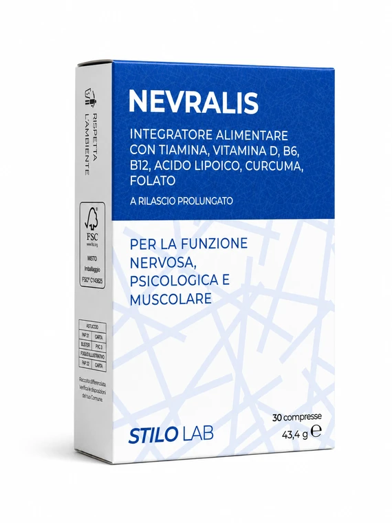
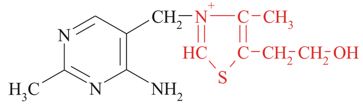
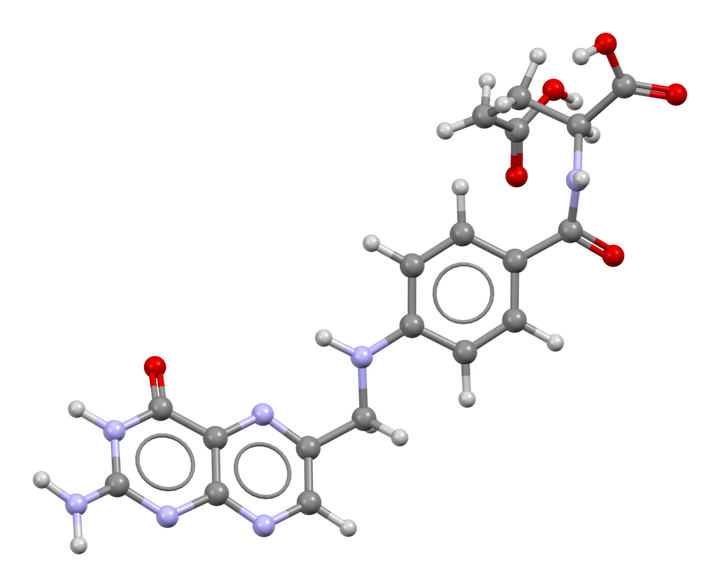
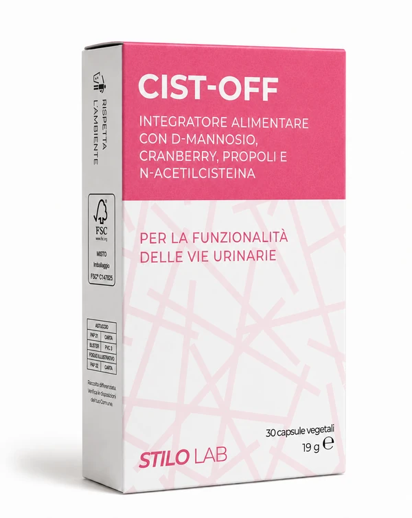
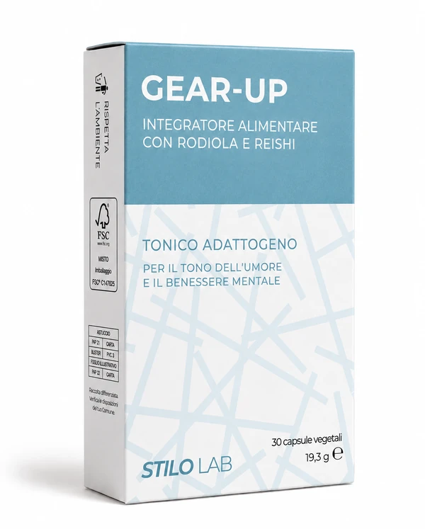
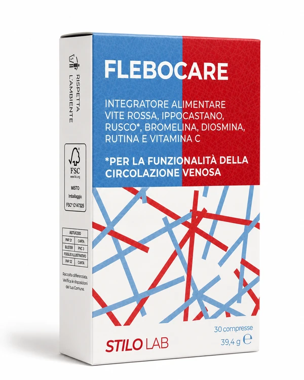

Nevralis
Supporto avanzato per la funzionalità del sistema nervoso
Funzionalità nervosaEnergia cellulareProtezione
NEVRALIS è un integratore alimentare formulato per sostenere la normale funzionalità del sistema nervoso grazie a una combinazione sinergica di acido α-lipoico a rilascio prolungato, vitamine del gruppo B, folato attivo Quatrefolic®, curcuma da estratto brevettato Indena® e vitamina D. Una formula completa che associa ingredienti selezionati e tecnologie innovative per supportare il metabolismo energetico, contribuire alla protezione dallo stress ossidativo e favorire il fisiologico equilibrio dell'organismo.
A cosa contribuisce
- Contribuisce al normale funzionamento del sistema nervoso
- Contribuisce al normale metabolismo energetico
- Contribuisce alla riduzione della stanchezza e dell'affaticamento
- Contribuisce al normale metabolismo dell'omocisteina
- Contribuisce alla normale funzione psicologica e alla normale emopoiesi
- Contribuisce al mantenimento della normale funzione muscolare e di ossa e denti normali
- Contribuisce alla normale funzione del sistema immunitario
- Sostiene la funzione digestiva, la funzionalità epatica e quella articolare
L'acido α-lipoico a rilascio prolungato e i curcuminoidi Fitosoma® contribuiscono a contrastare lo stress ossidativo, sostenendo l'equilibrio cellulare e il benessere del sistema nervoso.
I principali ingredienti
Acido α-lipoico a rilascio prolungato
Composto naturalmente presente nell'organismo e uno degli antiossidanti più studiati per il suo ruolo nel metabolismo cellulare, energetico e glucidico. La tecnologia a rilascio prolungato favorisce una disponibilità graduale dell'attivo nell'arco della giornata, integrandosi con l'azione delle vitamine del gruppo B. La sua attività antiossidante contribuisce a contrastare lo stress ossidativo, sostenendo l'equilibrio cellulare e il benessere del sistema nervoso.

Vitamine B1, B6 e B12
Svolgono un ruolo fondamentale nei processi fisiologici legati al sistema nervoso e alla produzione di energia: contribuiscono al normale funzionamento del sistema nervoso e al normale metabolismo energetico. Le vitamine B6 e B12 contribuiscono inoltre alla riduzione della stanchezza e dell'affaticamento; la vitamina B6 al normale metabolismo dell'omocisteina.

Folato attivo Quatrefolic®
Forma attiva e altamente biodisponibile di folato (5-MTHF), direttamente utilizzabile dall'organismo. Il folato contribuisce al normale metabolismo dell'omocisteina, alla normale funzione psicologica, alla normale emopoiesi e alla riduzione della stanchezza e dell'affaticamento, rappresentando un importante supporto nei processi metabolici e cellulari.
Curcuma Meriva® Fitosoma® (Indena®)
Estratto brevettato di Curcuma longa da rizoma, che garantisce elevati standard qualitativi e un'elevata affidabilità della materia prima. La curcuma favorisce la funzione digestiva e la funzionalità del sistema digerente, sostiene la funzionalità epatica e articolare ed esercita un'azione antiossidante. Contribuisce inoltre al benessere dell'organismo in relazione ai disturbi del ciclo mestruale.
Vitamina D (colecalciferolo)
Contribuisce alla normale funzione del sistema immunitario, al mantenimento della normale funzione muscolare e al mantenimento di ossa e denti normali. Contribuisce inoltre al normale assorbimento e utilizzo del calcio e del fosforo e interviene nel processo di divisione delle cellule.
Perché questa combinazione?
Una sinergia studiata per il benessere del sistema nervoso
L'associazione di acido α-lipoico a rilascio prolungato, vitamine del gruppo B, folato attivo Quatrefolic®, curcuma brevettata Indena® e vitamina D rende NEVRALIS una formulazione completa, pensata per accompagnare l'organismo nel mantenimento del suo fisiologico equilibrio.
- Acido α-lipoico R.P.disponibilità graduale nell'arco della giornata e protezione dallo stress ossidativo
- Vitamine del gruppo Bfunzionalità del sistema nervoso e metabolismo energetico
- Folato Quatrefolic®forma attiva 5-MTHF, metabolismo dell'omocisteina e funzione psicologica
- Curcuma Meriva®azione antiossidante e supporto digestivo, epatico e articolare
- Vitamina Dfunzione muscolare e immunitaria, mantenimento di ossa e denti
Una formula che associa ingredienti selezionati e tecnologie innovative — estratti brevettati e forme vitaminiche attive — per garantire qualità costante e un profilo attivo coerente.
Contenuti medi
| Componente | Quantità |
|---|---|
| Acido α-lipoico (a rilascio prolungato) | 600 mg |
| Curcuminoidi Fitosoma® Meriva® (Curcuma longa rizoma e.s.) | 250 mg |
| Tiamina (Vit. B1) | 12,2 mg (1109% VNR*) |
| Vitamina B6 (piridossina) | 4,8 mg (343% VNR*) |
| Folato (Quatrefolic® 5-MTHF) | 216 µg (108% VNR*) |
| Vitamina D (colecalciferolo) | 50 µg (1000% VNR*) |
| Vitamina B12 (cianocobalamina) | 10 µg (400% VNR*) |
per dose giornaliera (1 compressa) — *VNR: Valori Nutritivi di Riferimento
Modalità d'uso
Si consiglia l'assunzione di 1 compressa al giorno, preferibilmente durante un pasto, con un bicchiere d'acqua.
Informazioni in etichetta ingredienti · avvertenze · conservazione
Avvertenze
Non superare la dose giornaliera consigliata. Tenere fuori dalla portata dei bambini al di sotto dei 3 anni. Gli integratori non vanno intesi come sostituti di una dieta variata ed equilibrata e di uno stile di vita sano. In caso di terapie farmacologiche in corso consultare il medico.
Le altre formule Stilo Lab


